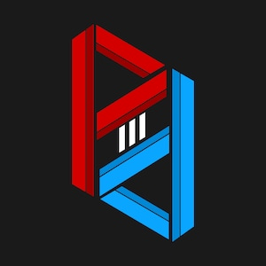

|  | PitStop 3D |
Click the install button below to install the "PS3d WiFi Clock" software to your device.
Clicking the above button will show a popup. Please select your device from the list. (See example of how your device would look like **the name will be different**)